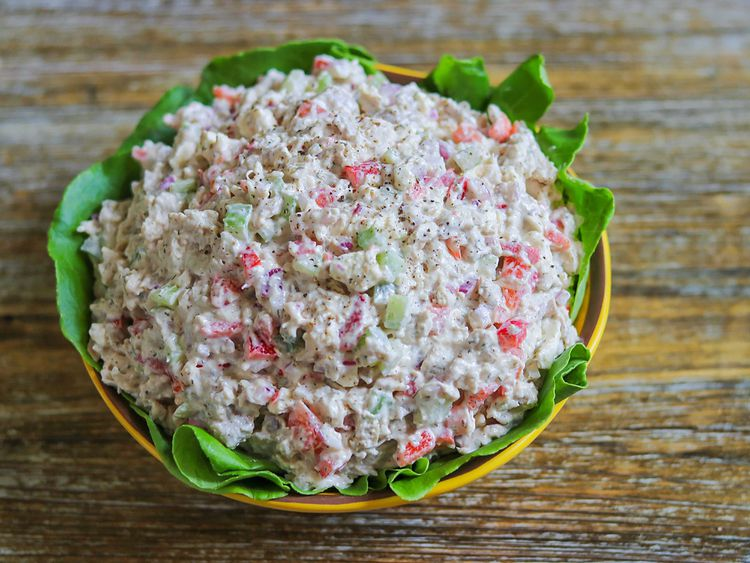

Feta Chicken Salad

Description
This feta chicken salad is a basic chicken salad recipe with red bell
peppers and feta cheese. Try using tomato-basil feta for added flavor!
Ingredients
- 3 cups diced cooked chicken
- 2 large stalks celery, diced
- 1 medium red bell pepper, seeded and diced
- 1/2 medium red onion, diced
- 6 tablespoons mayonnaise
- 6 tablespoons sour cream
- 1 (4 ounce) package feta cheese, crumbled
- 2 teaspoons dried dill weed
- salt and ground black pepper to taste
Steps
- Mix chicken, celery, and red onion together in a serving bowl.
-
Stir mayonnaise, sour cream, feta cheese, and dill together in a
separate bowl. Pour over chicken mixture, and stir to blend. Taste, and
season with salt and pepper as needed.
- Serve immediately, or refrigerate until serving.
Home